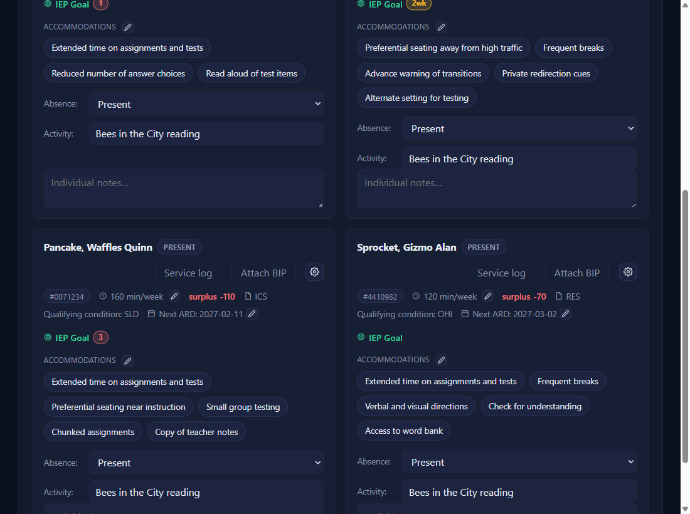
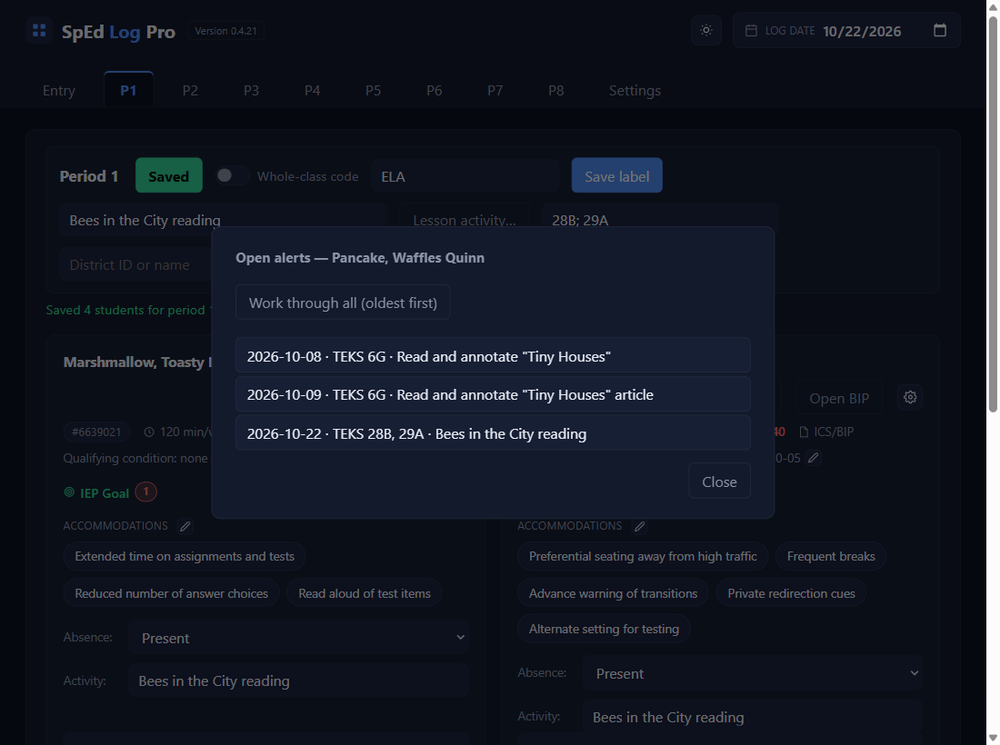
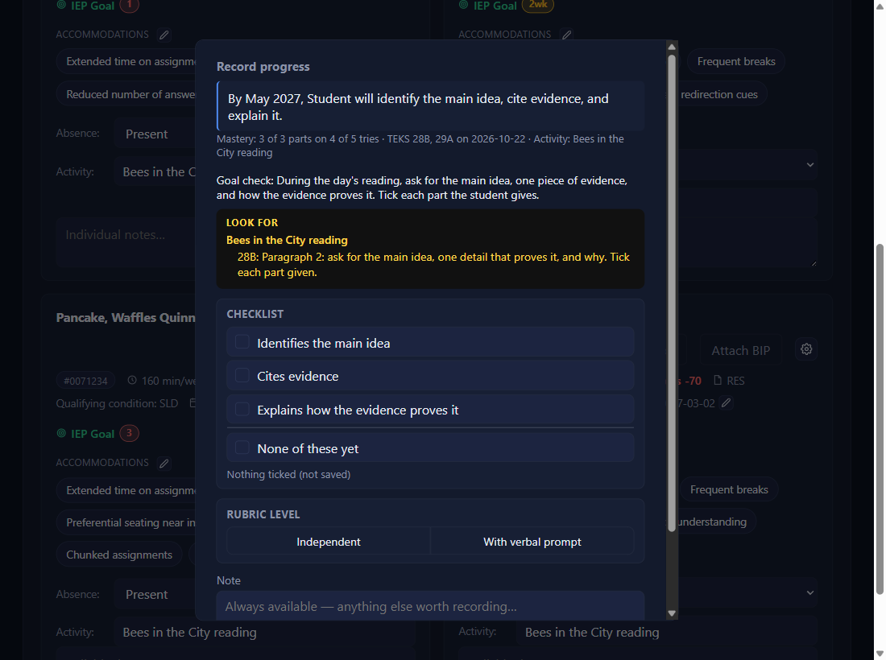
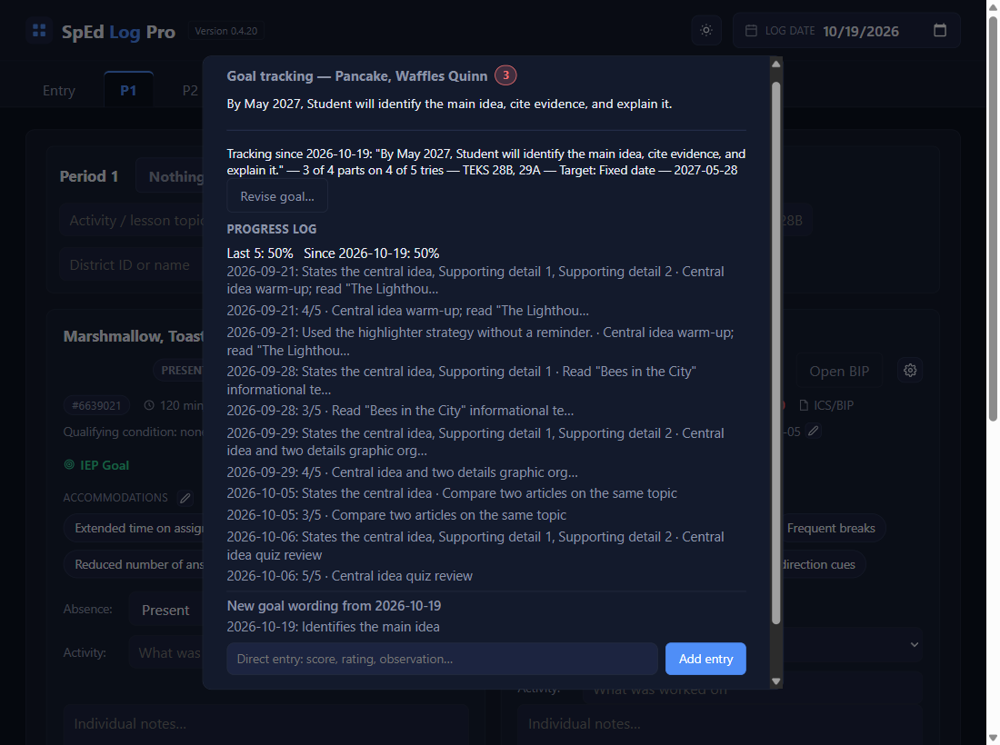

Record goal progress
Click the number next to IEP Goal
That number is how many alerts are waiting. Here, saving the New Deal lesson (TEKS 28A) raised one for Waffles.

Fill in what happened
The pop-up shows the goal, the TEKS, the date, and that day's activity. Tick the Checklist items met (it counts as you go), type Correct _ of _ for a trial fraction, and add a Note if you like.

Save, Dismiss, or Close
Save records it, dated to the lesson's day. Dismiss if it doesn't apply (absent, modified work): nothing is recorded. Close leaves it waiting. If there's another alert, it opens next.
See it in the progress log
Open IEP Goal: each entry reads date: result · activity, with Last 5 and All-time percentages. A goal with no TEKS never gets alerts: record its progress with Record progress… or the box at the bottom and Add entry, dated to the Log date.

A new goal starts a new countNEWfor version 0.4.20 and beyond
When a revision changes the goal's wording (a new goal after an ARD, or one imported from a Goal Setup file), the log shows New goal wording from … where it starts, greys the old goal's entries, and the percentages count only the new goal: All-time then reads Since …. A revision that keeps the wording (new TEKS, a corrected mastery note, a confirmed ARD date) changes none of this.

✓ You'll know it worked
- The alert number is gone.
- New lines in the progress log, and the percentages updated.
- After a new goal, its entries sit under
New goal wording from ….
✕ Avoid these
- Saving with nothing ticked. A checklist saved empty records 0%.
- Dismiss when you meant Close. Dismiss records nothing and closes the alert for good.
⚠ If you see this
Fill in at least one method before saving.Tick, type, or write a note first.